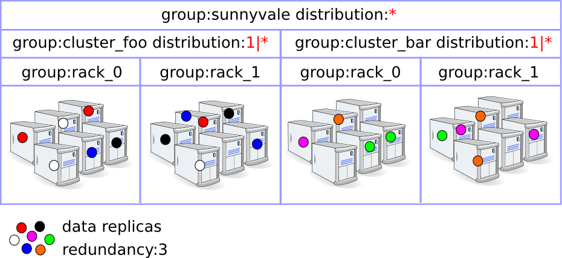
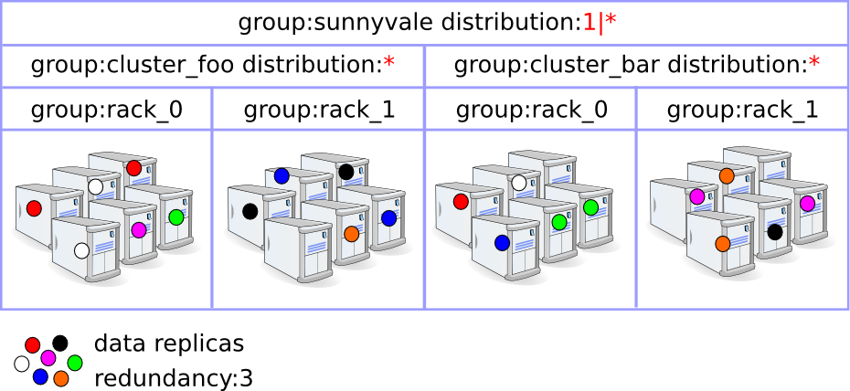

The group element is used to distribute documents - use cases:
Default, Vespa distributes buckets equally among all distributor and storage nodes. This creates a uniform distribution, but has a few drawbacks:
Hierarchical distribution can remedy the above. With this, you have control over where bucket copies are stored in relation to each other. For instance, if your cluster consists of 10 racks, you can define that for any given bucket, it should store 2 copies in one rack and 2 copies in another rack. That means that you can take down a whole rack, and you are still sure that all your data is available, because you know all data on that rack should have 2 copies on another rack. Also, improved network bandwidth can be utilized. If a node has restarted and it needs to fetch some data that came in while restarting to get up to date, it can now choose to fetch that data from a node on the same rack, which has better connectivity as it is in the same rack. (Here you must of course define one group per rack, and add the nodes in the rack in the respective groups)
This can also be used for simple data center failover. If nodes are divided into two separate geographical locations, you can define a group for each of these locations, and you can for instance configure 2 copies to be stored on each location. That way, your data is always available on both locations, and you can survive a fire without data loss.
Currently, you have no control of what group is selected for which copies though. The failover example works because you divide your copies among N groups with equal amount of copies in each, and you only have N groups available, thus you know each group will have that amount of copies.
Groups can be defined in several layers, creating a tree-structure. That way you can for instance define a top level group to do failover, and below that you can make smaller groups to improve network bandwidth locally and ensure you can take down multiple nodes simultaneously without making any data unavailable.
When configuring the groups, you have to bundle either a set of storage nodes (for a bottom level group) or a set of groups at a lower level to make your group. Then you must specify how data is to be distributed among the group children. Refer to the group documentation for details about how to configure storage groups.
Which groups are selected as primary, secondary and so on, groups for a given bucket is randomly determined using the same ideal state algorithm we use to pick nodes, described in more detail in the ideal state reference document. Each group is assigned an index, to be used in this algorithm. Because each bucket will have different sets of groups assigned to it, all data should still be equally divided among nodes, even though you have defined that one rack should keep twice as many bucket copies as another rack. If you have two racks, then one will typically store 2 copies for half of the buckets, and the other will store 2 copies of the other half of the buckets.
This will however likely create a bit worse skew globally compared to not using groups. If you're to divide buckets between two groups, you will likely get a little skew. Say one group will store 50.05 % of your data because the ideal state algorithm use pseudo-random numbers and doesn't create perfect distributions. Then the next level might also have a little skew, and as we move down, the cumulative skew will rise a bit.
When you configure groups, the distribution tag is used to tell how data should be distributed among its children. This tag is listed as optional allthough that is not really the case. It should not be in the lowest level group containing storage node, as here the ideal state algorithm is used directly. But in other groups it is mandatory. Here follows some examples of partitions specifications:
| Partition spec | Description |
|---|---|
| * | Place all your copies into 1 of your N groups. |
| *|* | Place all your copies as evenly as possible into 2 of your N groups |
| *|*|* | Place all your copies as evenly as possible into 3 of your N groups |
| n|* | Place n copies into 1 group, the rest into another. |
| n|*|* | Place n copies in 1 group, and divide the rest as evenly as possible into 2 other groups.s |
| n | illegal (use * and set redundancy to specify number of copies.) |
| n|m | illegal (use n|* and set redundancy to specify number of copies in the second group) |
| *|m | illegal (non-asterisk values must be placed first in specification) |
| n|*|m | illegal (non-asterisk values must be placed first in specification) |
The asterisks (*) will be replaced by numbers as the placement algorithm traverses down the tree when picking groups. You cannot store a half copy in a rack, so all the numbers must be integers. When dividing remaining copies among multiple groups, which can create fractions, fractions are rounded up and down to keep total redundancy correct.
Partitions like 1|2|* and 2|1|* are identical. After replacing asterisks with real numbers depending on the redundancy to split, the partitions will be sorted so the highest numbers appear first. This is because the highest priority child will get the first assignment, and then the second highest and so on. We want the highest priority groups for that bucket to keep most copies, to reduce amount of copies needing to be created and removed when groups go up or down. Thus, the order of numbers in the partition string is irrelevant.
We force an asterisk to be in an expression as we want them to be able to handle that global redundancy is altered. Also, if you use multiple group levels you might divide different amount of copies depending on which group bucket has been assigned to. For instance, if your global redundancy is 5 and your top level group partitions into 2|*, then you will have one group that get two copies and another group that get 3 copies. But each of these groups will be primary group (3 copies) and secondary groups (2 copies) for a lot of buckets, but it can only configure one partition specification. So if that subgroup then stores 1|*|* for instance, it will store 1|1|1 for the buckets where it is asked to keep 3 copies, and 1|1 for the buckets wher eit is asked to keep 2 copies.
If the redundacy at some level is lower than the partition spec demands, we store less copies than the partition spec wants. Starting leftwards. So if your spec is "2|2|*" and you're asked to store 3 copies only, you will first fill the primary group with 2, then give the secondary group the 1 remaining copy, and there will be no third group as there are no more copies to store. This may be a valid case if you use multiple levels of groups and a single group needs to store differently for buckets depending on which buckets it is primary or secondary group for.
Here are some examples illustrating how the data placement control feature would be helpful. They all depict a deployment scenario with redundancy 3 (i.e. 3 data copies) and a cluster topology composed of 2 clusters with 2 racks of nodes each. These examples have few groups and nodes to keep the example simple. In a normal case you'd probably have more racks than you want to store copies in for instance, so you'd pick 2 of N racks rather than 2 of 2.
A way to reduce the risk of data unavailability, is to spread the data copies across different geographical locations (e.g. data centers). In this example, the aim is to place all the copies in different racks (cautiousness).
Furthermore, this data placement enables fast upgrade procedures without service interruption, as entire groups can be upgraded at a time.
Large deployments involving dozens or hundreds of nodes intrinsically imply heterogeneous connectivity between groups of nodes. For instance, nodes located on the same switch will experience a greater connectivity than nodes that are not. And so it is at the rack, cluster and data center levels.
It is possible to reduce cross-level communication patterns by placing data replicas close to each other. In this example, the aim is to place all the copies in the same rack (optimized for performance).

Hybrid data placement trade performance and cautiousness to get a bit of both worlds. In this example, the aim is to place two copies in the same rack, and the third copy in a different rack but still in the same cluster.

If additional cautiousness is desired, the third copy can be placed in the other cluster.

A related feature to the hierarchical distribution is the initial redundancy. If you have set up a simple failover solution storing 2 copies each on two different locations, you might not be willing to wait for your writes to complete on all 4 copies before replying back. For these cases, you can configure an initial redundancy. If set to 2 for instance, writes will reply successfully as soon as 2 copies are written, which, assuming local access is much faster, will mean you're likely to get a response as soon as the two local writes have been completed. By default though, the primary copy of the bucket must be among the written ones though, as that copy is typically used for read access. This can be disabled through the ensure_primary_persisted attribute.